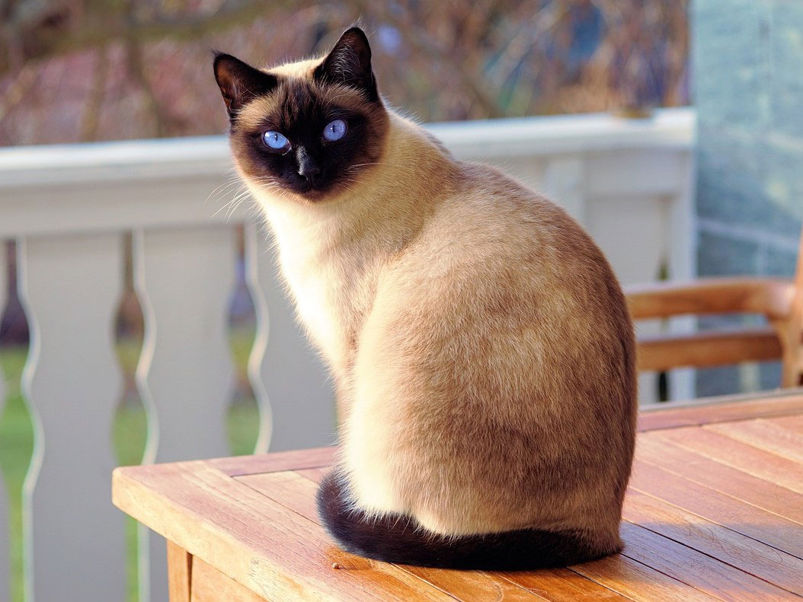

Welcome!
Jahmai the Hamster

In the bustling whirl of fifth grade, amidst chalk dust and the scent of fresh textbooks, found a steadfast friend in a little furball named Jahmai. Compact yet brimming with personality, Jahmai became not just a pet, but a confidant, a tiny beacon of joy who could always brighten your day with his playful antics and gentle presence. Jahmai was more than just a hamster; he was a furry little symphony of happiness, whisking through his cage with the elegance and gusto of a maestro commanding an orchestra. With fur that shimmered like the finest silk under the warm glow of his habitat light, Jahmai carried the comforting hues of a sunset, blending the warmest tones of golden yellows and soft browns.
Fluffy
Fluffy is the embodiment of grace and mystery, a feline with an allure that goes far beyond her luxurious coat of fur. Each day, as the morning sun graces the sky, Fluffy is there to greet it with a quiet but firm presence, a keeper of ancient secrets held in her golden, knowing eyes. Within the confines of your home, she rules with a gentle but firm paw, navigating her territory with an elegant saunter that seems to echo the rhythms of a distant, melodious song. Fluffy is not merely a pet, but a living, breathing work of art, a masterful painting of nature that brings beauty and calm into your daily life.
Baby Blinky

In a little corner of the world where laughter blooms like wildflowers and joy dances on the morning breeze, lives a petite, vibrant spirit named Baby Blink. A rabbit with the zest for life evident in every hop and a twinkle that echoes the sparkle of the first morning dew. Baby Blink is a beacon of innocence, adorning your life with moments of pure delight and wonder. Baby Blink's coat, soft as the whispers of the wind through the leaves, houses a heart that is curious and kind. Each day, this small adventurer embarks on epic journeys, traversing the expansive realms of your living room with a brave heart and an insatiable curiosity. Through Baby Blink's eyes, the world transforms into a magical playground, where every corner holds a new mystery to unravel and every moment promises a new, joyous discovery.
Sunny

In a world that sometimes seems to lack a bit of brightness, there enters a radiant beam of light named Sunny, the golden retriever who embodies joy, love, and the kind of loyalty that stories are woven around. Sunny is more than just a companion; he is a golden tapestry of happy moments, wagging tails, and a beacon of unwavering friendship.
- Sunny's Delights (Likes)
- Long Walks
- Joy
- Nice Treats
Goldy

In the gentle flow of her aquatic haven, Goldy embodies the essence of peace and tranquility. Her presence is a gentle reminder of the beauty and wonder that lies in the simplest of creatures, showcasing a world of wonder that thrives in the delicate flutter of fins and the graceful arcs she paints in the water with her supple body.